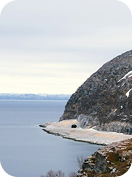
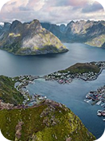
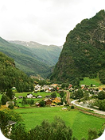
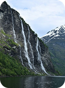
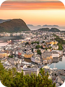
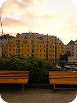
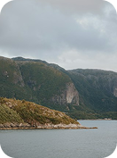
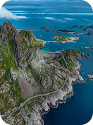
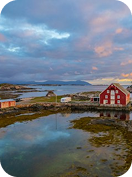

Majestic Fjords
and
Mountain
Passes
Cycling Tour
Discover Norway's majestic fjords and mountain passes on an unforgettable 10-day cycling adventure from Bergen to Kristiansund. Enjoy breathtaking landscapes, scenic coastal roads, charming villages and spectacular mountain views along the way.
Highlights
Daily Itinerary — 10 Days

Day 1
Arrival in Bergen
Arrive in Bergen, explore its colourful waterfront and prepare for your cycling adventure.

Day 2
Bergen to Hardangerfjord
Cycle through scenic landscapes and charming villages, enjoying beautiful views of the Hardangerfjord.

Day 3
Hardangerfjord to Voss
Discover mountain scenery, peaceful valleys and waterfalls on your way to Voss.

Day 4
Voss to Flåm
Ride through beautiful valleys and enjoy spectacular fjord views before arriving in Flåm.

Day 5
Flåm to Geiranger
Explore dramatic mountain landscapes and breathtaking waterfalls on your journey towards Geiranger.

Day 6
Geiranger to Ålesund
Enjoy scenic coastal routes and beautiful fjord landscapes before reaching Ålesund.

Day 7
Ålesund Rest Day
Explore Ålesund's charming streets, colourful architecture and scenic viewpoints at your own pace.

Day 8
Ålesund to Molde
Cycle along coastal roads and enjoy panoramic views of the surrounding islands and fjords.

Day 9
Molde to Kristiansund
Discover picturesque coastal landscapes and charming villages on the way to Kristiansund.

Day 10
Departure from Kristiansund
Enjoy your final moments in Kristiansund before departing and concluding your Norwegian cycling adventure.
Comfort Package Includes
Important Information
Duration: 10 days
Difficulty: Challenging
Starting point: Bergen
Ending point: Kristiansund
Comfortable cycling clothing, suitable shoes
and a waterproof jacket are recommended.
Please check the weather conditions and prepare
for long cycling distances, mountain passes
and changing weather.